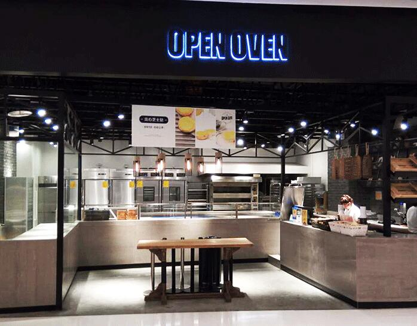

-

一节甜品屋面包蛋糕加盟在行业掀起一股投资热潮
经济的快速发展，人们的生活水平也在不断的提高。对于吃，也从最初一种填饱肚子就好的姿态转变为不仅要吃饱还要好吃，再而转变为不仅好吃还要健康，于是美味又健康的烘焙应运...
作者：一节甜品屋面包 来源：http://www.shuiguolaoojm.cn
-
成熟烘焙加盟店一节甜品屋面包蛋糕加盟品牌实力
烘焙越来越受宠，使得国内外众多烘焙加盟品牌应运而生。而在这样的一个良好社会背景下，许多创业者想要投资创业开烘焙加盟店创造更多收益，开烘焙加盟店不仅需要成熟的经验，...
作者：一节甜品屋面包 来源：http://www.shuiguolaoojm.cn
-
开一节甜品屋面包店，你要了解未来面包烘焙加盟趋势
从20世纪八十年代到现在，面包的种类经历了从无到有，由少到多的变化过程，随着面包作为健康方便食品的首选产品之一，消费者对面包烘焙的需求越来越大，这也进一步催生了面包...
作者：一节甜品屋面包 来源：http://www.shuiguolaoojm.cn